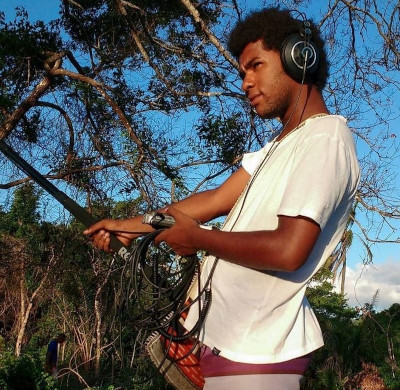

Olá, seja bem-vindo ao meu site!
Meu nome é Vanderlei Neto, sou Produtor Cultural e Desenvolvedor Web Front-end apaixonado pela criação de interfaces.

Minhas Vivências
O meu primeiro contato com a arte foi ainda na infância, através da música. Alguns anos depois, tive contato com a fotografia através da participação no projeto Auto Retrato, realizado na Comunidade de Santiago do Iguape. Também tive a oportunidade de vivenciar o cinema durante meu envolvimento com a Escola de Cinema Zumbi dos Palmares.